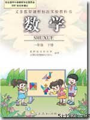

没有发现这些优势怎么办？ //@Apache9:计算机组成原理课上讲光盘的涂层还是用金子做的呢！//@pw_网易有道: 也就这点用+1 //@杨元祖: 当你发现，也就这点用的时候该怎么办呢？---:抱歉，此微博已被作者删除。查看帮助： 网页链接
0 //@马少平THU:很可能是老师说是0，回到家被家长说是1，然后就到学校说是1了//@huhupao: 这同学挨批评是因为老师讲了他没记住嘛//@马少平THU: 目前，国外的数学界大部分都规定0是自然数。为了国际交流的方便，1993年颁布的《中华人民共和国国家标准》（GB 3100～3102-9@蔡天新:适才北京一位母亲发信问我：最小的自然数是几？如果是0，为什么？世界上哪家机构规定的？或咱国家自己规定？如您知道，请务必回答，因我家里4年级同学回答1被老师严厉批评遭罚。我的答复是：全世界数学家公认0不是自然数，《现代汉语词典》和《大英百科全书》也这么定义，只有人教版《数学》教材例外。 